Abstract
Foundational Vision Transformers (ViTs) have limited effectiveness in tasks requiring fine-grained spatial understanding, due to their fixed pre-training resolution and inherently coarse patch-level representations. These challenges are especially pronounced in dense prediction scenarios, such as open-vocabulary segmentation with ViT-based vision-language models, where high-resolution inputs are essential for accurate pixel-level reasoning. Existing approaches typically process large-resolution images using a sliding-window strategy at the pre-training resolution. While this improves accuracy through finer strides, it comes at a significant computational cost. We introduce SPAR: Single-Pass Any-Resolution ViT, a resolution-agnostic dense feature extractor designed for efficient high-resolution inference. We distill the spatial reasoning capabilities of a finely-strided, sliding-window teacher into a single-pass student using a feature regression loss, without requiring architectural changes or pixel-level supervision. Applied to open-vocabulary segmentation, SPAR improves single-pass baselines by up to 10.5 mIoU and even surpasses the teacher, demonstrating effectiveness in efficient, high-resolution reasoning.
Motivation
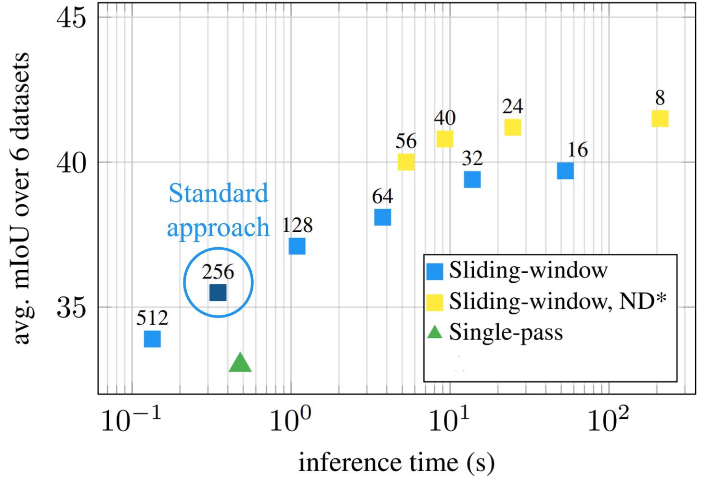
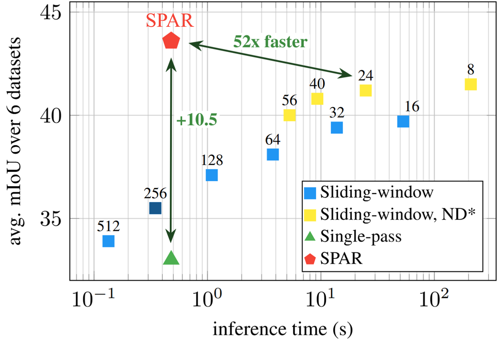
Common practice in semantic segmentation processes images with a sliding window using a stride equal to half the window size (e.g., 512 → 256) , offering a reasonable balance between coverage and efficiency. However, this choice is far from optimal. Reducing the stride significantly improves predictions, as each region is observed under more diverse contexts, but finer strides rapidly increase computational cost, exposing a sharp trade-off between accuracy and inference time.
What if we could get the benefits of extremely fine strides—while keeping inference time nearly unchanged?
We introduce SPAR: Single-Pass Any-Resolution ViT , a resolution-agnostic dense feature extractor for efficient high-resolution inference. We distill knowledge from fine-strided teachers into a single-pass model that outperforms them while maintaining efficiency.
Method
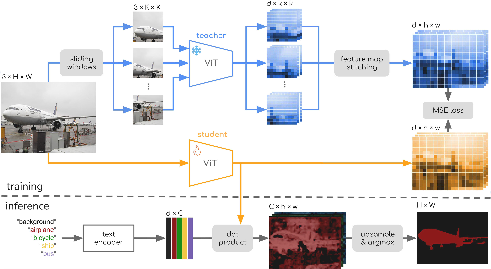
The SPAR framework consists of a teacher-student distillation setup for efficient high-resolution feature extraction. During training, the teacher branch uses a frozen foundational vision encoder to produce feature maps via a fine-strided sliding-window process, allowing it to observe images in their native resolutions and aspect ratios. These extracted window-level features are stitched into a unified representation aligned with the original image layout. The student branch, initialized from the same pre-trained weights, learns to match the teacher's outputs while operating in a single-pass setting on the same input image. Consequently, SPAR requires no labeled data, as supervision is achieved through feature-level alignment, and no additional architectural changes. At inference time, the resulting model enables fast and accurate segmentation across diverse resolutions and aspect ratios using only one forward pass.
Results
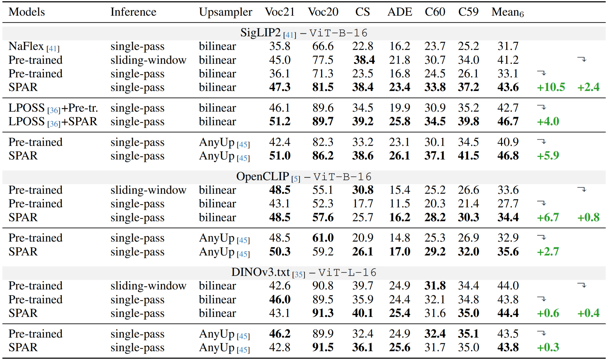
Compatibility with multiple strong vision backbones, including MaskCLIP, SigLIP2, and DINOv3.txt, highlights broad applicability across modern foundation models, demonstrating strong generalization across different vision transformer backbone sizes, pretraining objectives, and architectures.
SPAR delivers consistent improvements across all evaluated backbones and benchmarks, significantly outperforming pretrained single-pass baselines and even surpassing the teacher models, all while efficiently processing images across diverse resolutions with aspect ratios preserved.
Positive integration with existing approaches such as LPOSS, which refines segmentation predictions via training-free label propagation, and AnyUp, which enhances output resolution through learned upsampling, highlights complementarity with other segmentation and refinement methods.
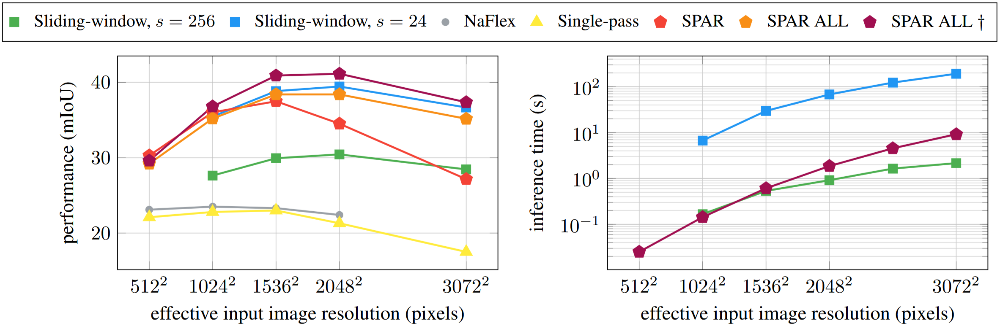
SPAR demonstratively improves performance across a range of resolutions when trained in the standard lightweight manner of updating only the last two layers. Training the full network, denoted by SPAR ALL, further strengthens this behavior, resulting in performance closely aligned with the teacher across resolutions, including those beyond the training distribution that utilized images with area up to approximately 1.5k² pixels. Increasing the maximum shorter side from 2048 to 2560 during fine-tuning provides additional gains, with the enhanced variant, indicated by †, achieving even stronger performance and consistently surpassing the teacher across resolutions.
Visualization
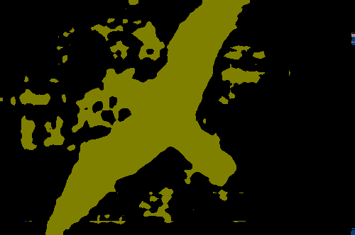
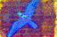
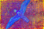
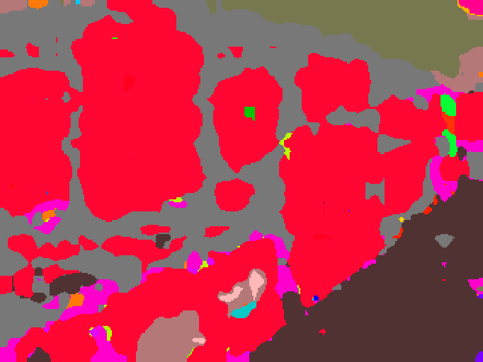
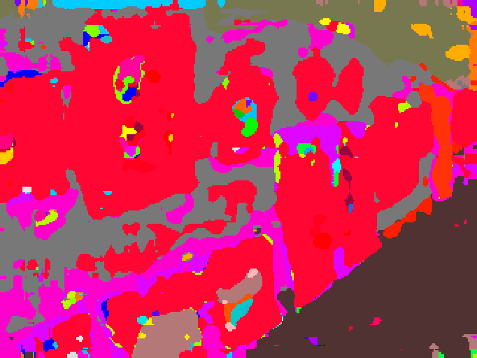
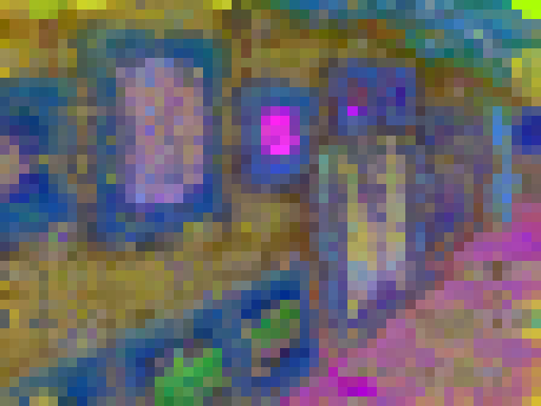
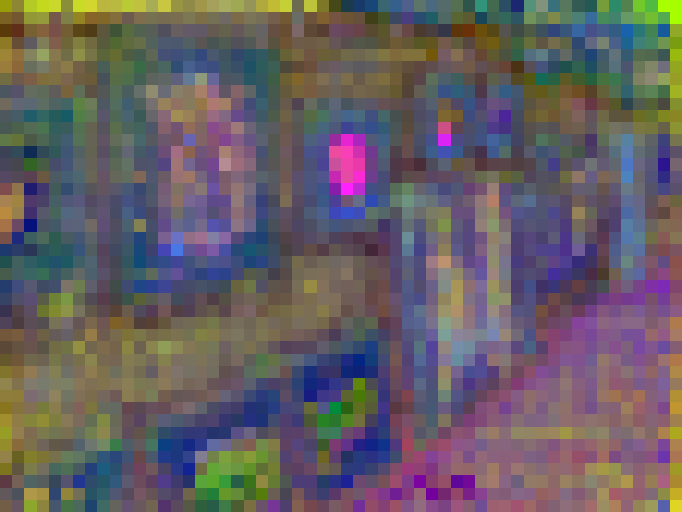
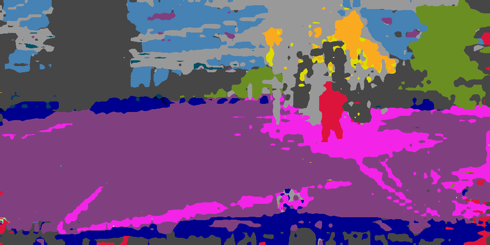
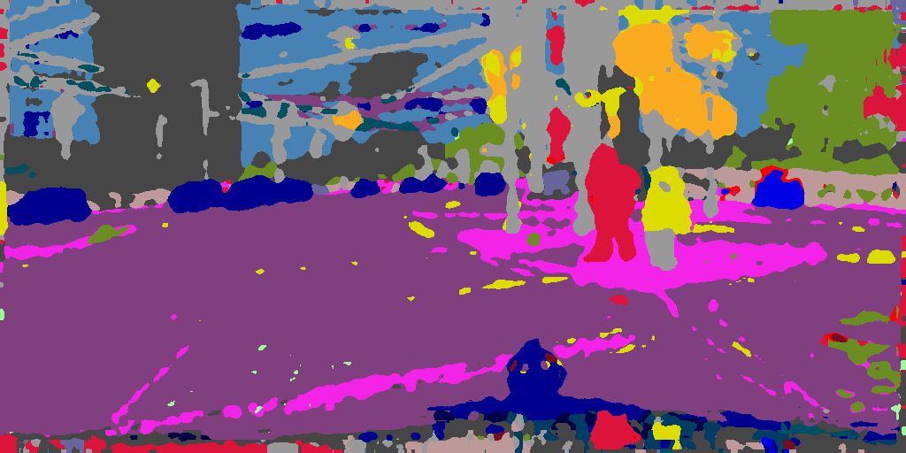
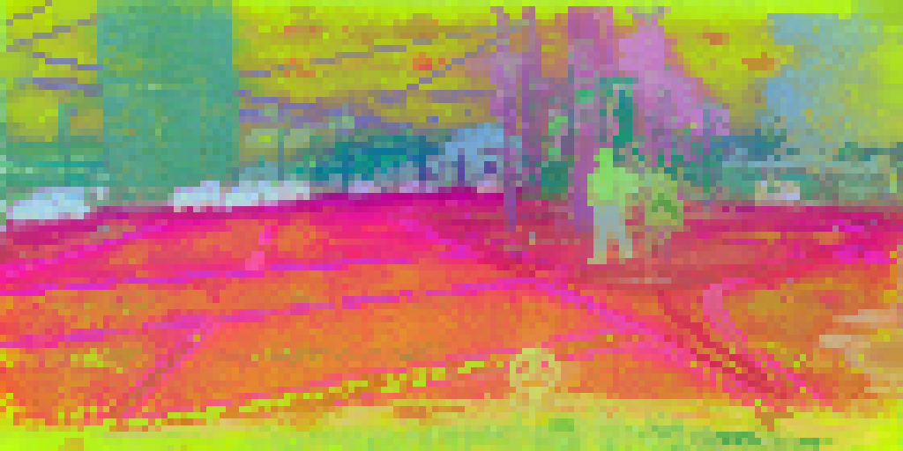
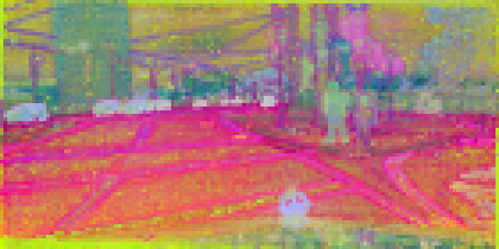
Semantic map and PCA visualizations reveal SPAR improves spatial smoothness and
semantic coherence, producing cleaner boundaries and more differentiated region consistency even over the teacher.
BibTeX
@article{kombol2026spar,
title={SPAR: Single-Pass Any-Resolution ViT for Open-vocabulary Segmentation},
author={Kombol, Naomi and Martinovi{\'c}, Ivan and {\v{S}}egvi{\'c}, Sini{\v{s}}a and Tolias, Giorgos},
journal={arXiv preprint arXiv:2604.02252},
year={2026},
note={Accepted to CVPR 2026}
}